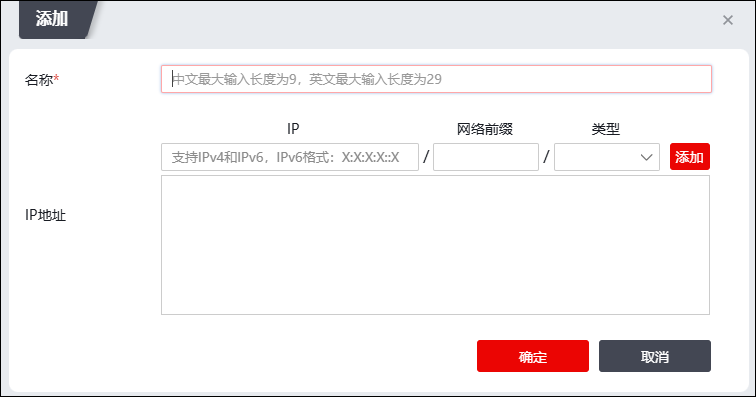

IP黑白名单是IPv4地址或IPv6地址的集合，可以将IP/网段定义为white/black类型，用于站点识别一个客户端IP是来自信任网络还是来自黑名单网络，对于信任网络，可以设置不进行防护规则处理直接转发请求，对于黑名单类型网络，会被TopWAF阻断请求。
| 步骤1 | 选择 ，激活“IP黑白名单”页签。 |
| 步骤2 | 点击“添加”，弹出“添加IP黑白名单”窗口，如下图所示。 |

| 步骤3 | 点击窗口中的“添加”，在IP黑白名单中添加IP地址，并配置相关参数。 |
在添加IP黑白名单时，各项参数的具体说明如下表所示。
参数 |
说明 |
|---|---|
名称 |
必选项，设置IP黑白名单名称。 |
IP地址 |
设置IP主机地址或者IP网段，支持IPv4地址和IPv6地址。 |
掩码（IPv4）/前缀（IPv6） |
设置IPv4地址的掩码或者IPv6地址的前缀。 1）IPv4地址：输入IPv4地址的子网掩码。如果设置为32，则表示添加的地址为IPv4主机地址，如果设置为1-31，表示添加地址为IPv4子网地址。 2）IPv6地址：输入IPv6地址的前缀。如果设置为128，则表示添加的地址为IPv6主机地址，如果设置为1-127，表示添加地址为IPv6子网地址。 |
类型 |
设置该IP地址的类型。 白名单：该地址为可信地址，不对来自该地址的请求报文进行安全策略过滤。 黑名单：该地址为黑名单地址，对该来自地址的请求报文直接丢弃。 |
| 步骤4 | 参数配置完成后，点击【确定】按钮，完成IP黑白名单的添加。 |